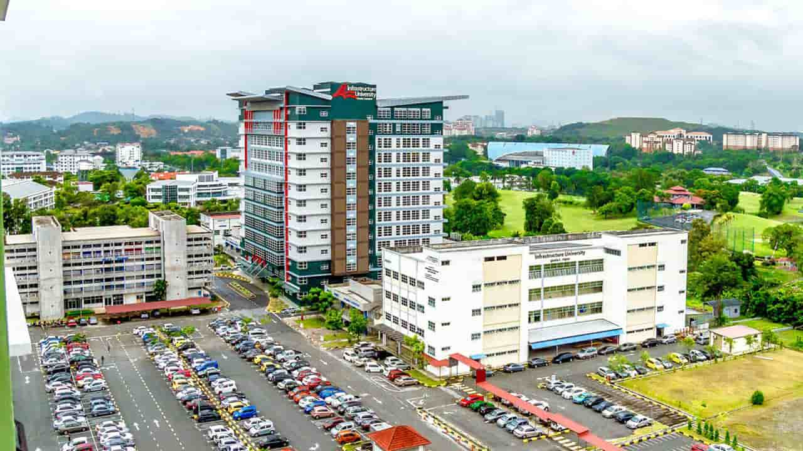
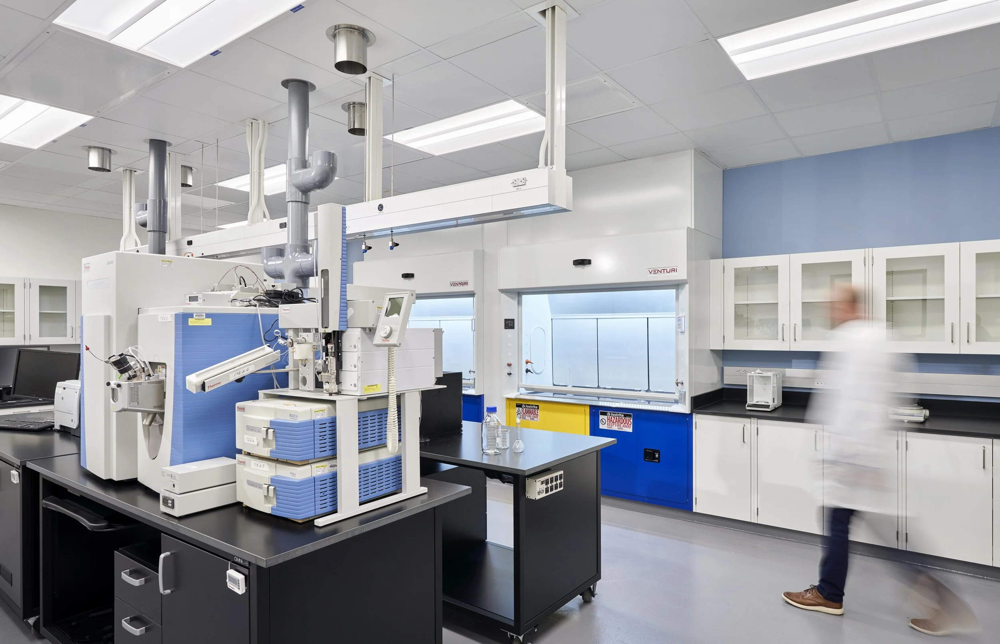
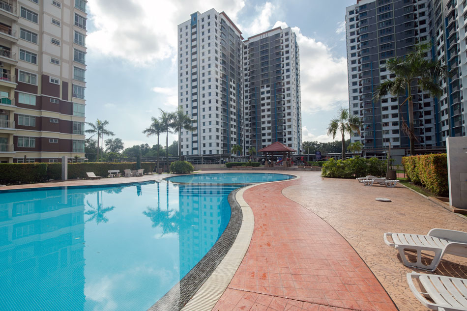
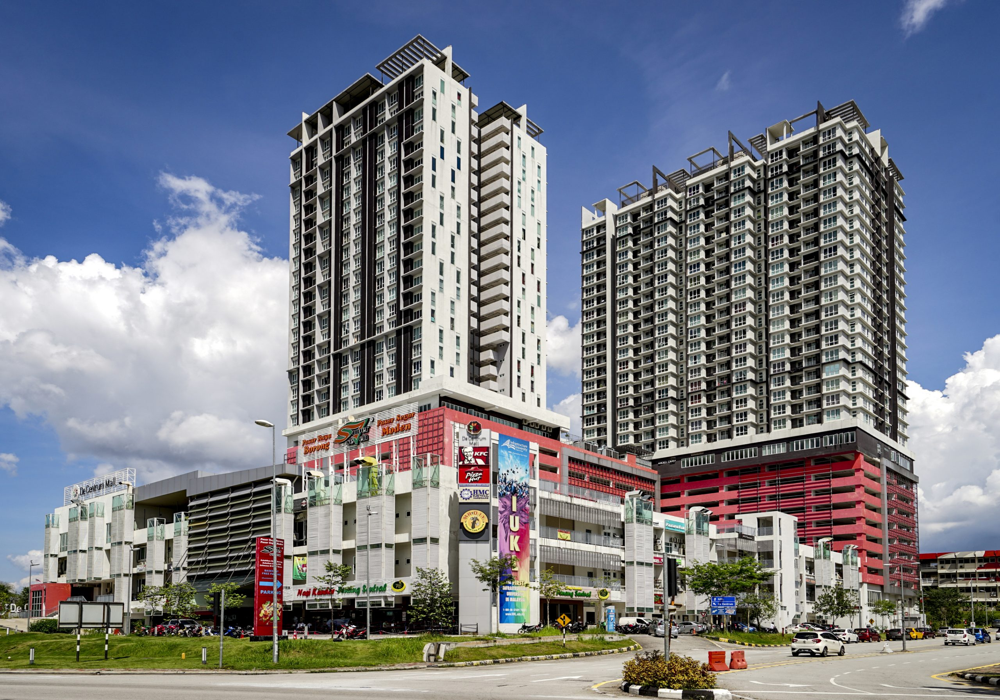
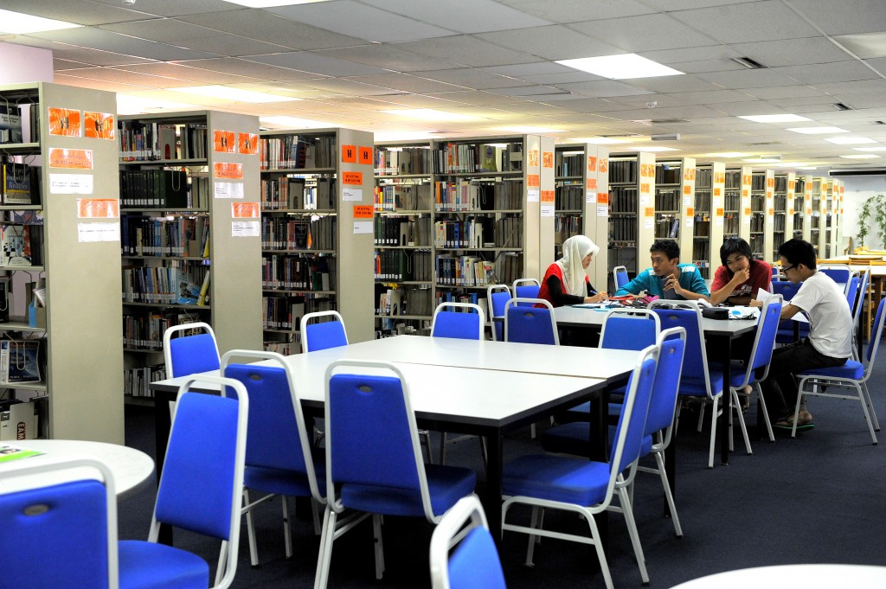

University overview
About KL University of Science & Technology
KLUST (formerly IUKL) is Malaysia's first and only university specializing in Infrastructure. For over 20 years, it has been the premier destination for Engineering, Architecture, and Quantity Surveying education.
Now rebranded as KLUST, it continues its legacy of producing "Technopreneurs" with a strong focus on practical skills, sustainability, and real-world technology application.





International students
Study at KL University of Science & Technology as an international student
Compare KL University of Science & Technology courses, campuses, fees and entry requirements for your intended intake.
Programmes and tuition
KL University of Science & Technology KLUST courses and fees for international students
| Program | Published Fees | Scholarship | Total Fees |
|---|---|---|---|
| Foundation in Arts | RM 14,490 | RM 4,347 | RM 10,143 |
| Foundation in Science | RM 16,920 | RM 5,076 | RM 11,844 |
| Incentive English Program | RM 12,000 | None | RM 12,000 |
Schedule remarks:
Initial Fees:
EMGS Fees: RM3,200 (Non-refundable)
International Student Fees: RM8,000
Caution Fees (Refundable): RM1,500
Resource Fee: RM300/Semester (Diploma only)
Total Initial Payment: RM18,000
(Includes EMGS, Intl Fee, Caution Fee, and 1st Semester Tuition Fees)
Payment Schedule:
1st Payment: RM18,000 (Total Initial Payment)
Visa Renewal Fee: RM1,000 per annum (from 2nd year onwards)
Study Extension: Regular fees apply.
| Program | Published Fees | Scholarship | Total Fees |
|---|---|---|---|
| Diploma in Architecture | RM 47,000 | RM 14,100 | RM 30,200 |
| Diploma in Landscape Architecture | RM 34,780 | RM 10,434 | RM 23,104 |
| Diploma in Quantity Surveying | RM 33,725 | RM 10,118 | RM 22,282 |
| Diploma in Automotive Engineering | RM 31,200 | RM 9,360 | RM 20,646 |
| Diploma Agricultural Science (Plantation Management) | RM 29,900 | RM 8,970 | RM 20,192 |
| Diploma in Civil Engineering | RM 31,850 | RM 9,555 | RM 21,101 |
| Diploma in Electrical & Electronics Engineering | RM 29,925 | RM 8,978 | RM 20,542 |
| Diploma in Mechanical Engineering | RM 30,550 | RM 9,165 | RM 20,419 |
| Diploma in Accounting | RM 30,875 | RM 9,263 | RM 20,647 |
| Diploma in Business Administration | RM 29,250 | RM 8,775 | RM 18,825 |
| Diploma in Corporate Communication | RM 31,200 | RM 9,360 | RM 20,646 |
| Diploma in English for Professional Communication | RM 30,225 | RM 9,068 | RM 19,963 |
| Diploma in Information Technology | RM 29,900 | RM 8,970 | RM 19,964 |
| Diploma in Sports Management | RM 23,850 | RM 7,155 | RM 16,443 |
Schedule remarks:
Initial Fees:
EMGS Fees: RM3,200 (Non-refundable)
International Student Fees: RM8,000
Caution Fees (Refundable): RM1,500
Resource Fee: RM300/Semester (Diploma only)
Total Initial Payment: RM18,000
(Includes EMGS, Intl Fee, Caution Fee, and 1st Semester Tuition Fees)
Payment Schedule:
1st Payment: RM18,000 (Total Initial Payment)
Visa Renewal Fee: RM1,000 per annum (from 2nd year onwards)
Study Extension: Regular fees apply.
| Program | Duration | Published Fees | Scholarship | Total Fees |
|---|---|---|---|---|
| Bachelor of Technology (Hons) in Automotive | 3 years | RM 64,800 | RM 19,440 | RM 41,832 |
| Bachelor of Electronics Engineering with Honours | 4 years | RM 77,625 | RM 23,288 | RM 50,400 |
| Bachelor of Civil Engineering with Honours | 4 years | RM 88,200 | RM 26,460 | RM 58,022 |
| Bachelor of Mechanical Engineering with Honours | 3.5 years | RM 77,625 | RM 23,288 | RM 48,785 |
| Bachelor of Agricultural Science (Plantation Management (Hons) | 3 years | RM 62,115 | RM 18,635 | RM 40,017 |
| Bachelor of Computer Science (Hons) | 3 years | RM 62,400 | RM 18,720 | RM 40,752 |
| Bachelor of Software Engineering | 3 years | RM 62,400 | RM 18,720 | RM 41,120 |
| Bachelor of Technology (Hons) in Electro-Mechanical | 3.5 years | RM 69,660 | RM 20,898 | RM 45,234 |
| Bachelor of Science (Architectural Studies) | 3 years | RM 84,180 | RM 25,254 | RM 53,134 |
| Bachelor of Landscape Architecture | 3 years | RM 71,875 | RM 21,563 | RM 45,969 |
| Bachelor of Quantity Surveying (Hons) | 3 years | RM 65,190 | RM 19,557 | RM 42,225 |
| Bachelor of Technology (Hons) in Construction Management | 3 years | RM 64,800 | RM 19,440 | RM 42,208 |
| BA (Hons) TESOL | 3 years | RM 51,000 | RM 15,300 | RM 34,140 |
| Bachelor of Accountancy (Hons) | 3.5 years | RM 63,940 | RM 19,182 | RM 41,860 |
| Bachelor of Business Administration (Hons) | 3 years | RM 55,200 | RM 16,560 | RM 35,744 |
| Bachelor of Business Administration (Hons) in E-Commerce | 3 years | RM 55,200 | RM 16,560 | RM 35,744 |
| Bachelor of Communication (Hons) in Corporate Communication | 3 years | RM 54,900 | RM 16,470 | RM 36,606 |
| Bachelor of Communication (Hons) in Integrated Marketing Communication | 3 years | RM 51,850 | RM 15,555 | RM 34,735 |
| Bachelor of Science (Hons) in Logistics and Supply Chain Management | 3 years | RM 62,220 | RM 18,666 | RM 40,026 |
| BA (Hons) English for Professional Communication | 3 years | RM 54,000 | RM 16,200 | RM 35,032 |
| Bachelor of Science (Hons) in Economics and Finance | 3 years | RM 62,220 | RM 18,666 | RM 40,026 |
Schedule remarks:
Initial Fees:
EMGS Fees: RM3,200 (Non-refundable)
International Student Fees: RM8,000
Caution Fees (Refundable): RM1,500
Total Initial Payment: RM18,000
(Includes EMGS, Intl Fee, Caution Fee, and 1st Semester Tuition Fees)
Payment Schedule:
1st Payment: RM18,000 (Total Initial Payment)
Visa Renewal Fee: RM1,000 per annum (from 2nd year onwards)
Study Extension: Regular fees apply.
| Program | Duration | Published Fees | Scholarship | Total Fees |
|---|---|---|---|---|
| Master of Science in Built Environment (By Research) | 2 years | RM 33,960 | RM 10,188 | RM 21,917 |
| Master in Electronics Engineering (By Research) | 2 years | RM 36,800 | RM 11,040 | RM 22,220 |
| Master of Civil Engineering (By Research) | 2 years | RM 36,800 | RM 11,040 | RM 22,220 |
| Master of Architecture | 2 years | RM 39,000 | RM 11,700 | RM 23,830 |
| Master of Business Administration | 1 year | RM 34,230 | RM 10,269 | RM 18,303 |
| Master in Communication | 2 years | RM 31,280 | RM 9,384 | RM 19,084 |
| Master in Information Technology | 2 years | RM 31,800 | RM 9,540 | RM 18,483 |
| Master of Science in Water Resources | 2 years | RM 31,200 | RM 9,360 | RM 19,280 |
| Master of Arts in Teaching English to Speakers of Other Languages (MA TESOL) | 2 years | RM 28,560 | RM 8,568 | RM 17,180 |
Schedule remarks:
Initial Fees:
EMGS Fees: RM3,200 (Non-refundable)
International Student Fees: RM8,000
Caution Fees (Refundable): RM1,500
Total Initial Payment: RM18,000
(Includes EMGS, Intl Fee, Caution Fee, and 1st Semester Tuition Fees)
Payment Schedule:
1st Payment: RM18,000 (Total Initial Payment)
Visa Renewal Fee: RM1,000 per annum (from 2nd year onwards)
Study Extension: Regular fees apply.
| Program | Published Fees | Scholarship | Total Fees |
|---|---|---|---|
| Doctor of Philosophy in Business Administration | RM 37,800 | RM 11,340 | RM 25,828 |
| Doctor of Philosophy in Civil Engineering | RM 53,490 | RM 16,047 | RM 35,352 |
| Doctor of Philosophy in Communication | RM 36,240 | RM 10,872 | RM 24,888 |
| Doctor of Philosophy in Education | RM 28,800 | RM 8,640 | RM 20,376 |
| Doctor of Philosophy in Information Technology | RM 36,240 | RM 10,872 | RM 24,888 |
Schedule remarks:
Initial Fees:
EMGS Fees: RM3,200 (Non-refundable)
International Student Fees: RM8,000
Caution Fees (Refundable): RM1,500
Total Initial Payment: RM18,000
(Includes EMGS, Intl Fee, Caution Fee, and 1st Semester Tuition Fees)
Payment Schedule:
1st Payment: RM18,000 (Total Initial Payment)
Visa Renewal Fee: RM1,000 per annum (from 2nd year onwards)
Study Extension: Regular fees apply.
Download fee schedule (PDF)
Stored fee document for Kuala Lumpur University of Science and Technology. Check the printed validity and terms.
KLUST (IUKL) rankings: QS World, Asia & Malaysia
Verified . Each figure below names its ranking edition.
- QS World 2027
- Not listed
- QS Asia 2026
- QS Contributor (no rank)
- Malaysia · QS World 2027
- Not listed
QS lists KLUST under its current name and former name, Infrastructure University Kuala Lumpur (IUKL). Its QS Contributor status for Asia 2026 does not award a numerical rank.
“Not listed” refers to the named QS table. “Not verified” means we could not confirm a position for that edition; it does not establish that the institution is unaccredited.
Malaysia positions are calculated among the 32 institutions listed by QS under Malaysia in its World 2027 table. This is not a separate government ranking. An = sign marks a tie. Institutions in the same world-rank band share a national position range because their exact order is not published.
QS World and QS Asia use different methods. Overall university positions do not establish the ranking of a particular BBA, IT, MBA or other program.
Explore the campus
Campus gallery
Questions and answers
Frequently Asked Questions About KL University of Science & Technology KLUST
View ranking sources
QS World University Rankings 2027 - official results spreadsheet (v1.1) · QS World University Rankings 2027 - release corrections · Kuala Lumpur University of Science & Technology (KLUST) - QS profile
What is the QS World ranking of Kuala Lumpur University of Science & Technology (KLUST) in 2027?
KLUST (IUKL) has no institution entry in the published QS World University Rankings 2027 table.
Sources: QS World University Rankings 2027 - official results spreadsheet (v1.1) · QS World University Rankings 2027 - release corrections
What is the QS Asia ranking of Kuala Lumpur University of Science & Technology (KLUST) in 2026?
KLUST (IUKL) is a QS Contributor for QS Asia University Rankings 2026, with no numerical rank awarded.
Sources: Kuala Lumpur University of Science & Technology (KLUST) - QS profile
What is the ranking of Kuala Lumpur University of Science & Technology (KLUST) in Malaysia?
KLUST (IUKL) has no separate Malaysia position in the QS World 2027 table because it has no institution entry listed under Malaysia. This is a position within the QS World table, not a separate government ranking or a QS Asia position.
Sources: QS World University Rankings 2027 - official results spreadsheet (v1.1) · QS World University Rankings 2027 - release corrections
Do QS Stars, SETARA or partner rankings give Kuala Lumpur University of Science & Technology (KLUST) an overall QS rank?
QS Stars and SETARA are ratings, not numerical positions in a QS league table. A subject ranking applies to that subject, and a partner university rank belongs to the named partner. Check the institution, ranking system and edition before comparing.
Sources: QS Stars rating system
What are KLUST (IUKL)'s tuition fees for international students?
Find your program and campus in the fee chart on this page, then read the relevant student category, fee columns and remarks. The schedule uses labels including Total Fees. Different programs and fee periods cannot be combined into one reliable tuition price. Amounts not shown need an intake-specific quotation.
What are KLUST (IUKL)'s tuition fees for Bangladeshi students?
Bangladeshi applicants should check the international-student rate for their program and intake. This page does not establish a separate Bangladesh-only tuition rate or guarantee eligibility for a discount. Check nationality-specific charges, deposits, visa costs and scholarship conditions in the schedule and your written offer.
Does the KLUST (IUKL) fee chart show fees per semester or per year?
Use the exact period printed in each column. A first-year payment, fee per semester and full-program total describe different costs. Where a semester or annual breakdown is absent, request a payment schedule; dividing a program total can give the wrong instalment amount.
Where can I find the official KLUST (IUKL) fee chart?
The download links on this page open the stored fee documents. One-Step is a student guidance website. Confirm the document's edition, campus, student category and validity with the university before accepting an offer or paying. The university's current written fee schedule and offer determine the amount payable.
Which year do the KLUST (IUKL) fees apply to?
Use any effective dates and intake restrictions stated in the fee documents and course remarks. A single validity year has not been confirmed for every table on this page. A recent page update does not mean all underlying fees are for the current year.
Does KLUST (IUKL) offer scholarships for international students?
Check any scholarship, adjusted tuition or discount columns alongside their conditions. A listed reduction is not an automatic award for every international or Bangladeshi applicant. Ask for the scholarship name, eligibility, application deadline, renewal conditions and final payable fee in writing.